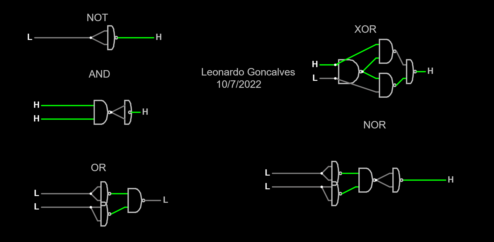

Name: Leonardo Goncalves Journal: J1016 Date: 10-Sep-2022
I received assistance from: Isaac Rose I assisted: Aditya Sudharshan 
What did I learn? What is the "big idea"? I learned that falstad is boring. The big idea is being able to learn for our futere. What challenges did I encounter? I had no chalenges How could this experience be improved? This experience could be improved if there were more questions. Free Reflection: How has what I've learned affected my thinking? What I learned changes my thinking by making me more sure that I want to work in the computer science industry when I grow up.